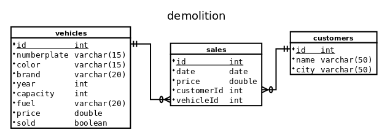

Üdvözlöm a honlapomon

Ez a kurzus az adatbázis készítés alapjait tartalmazza
Tartalom
- Az adatbázis-kezelő feladata
- Az adatbázis objektumai
- Adatbázis-kezelő rendszerek
- Az adattáblák kezelése, kulcs fogalma
- Rekordok felvitele
- Statisztikai számítások a táblában